1과목: 기계제작법
1. 다이 내에 테이퍼 구멍으로 소재를 잡아 당겨서 테이퍼 구멍과 동일한 단면의 봉재, 관재, 선재를 제작하는 가공 방법은?
2. 용접봉 표시기준 “E 4313"에서 그 의미가 맞는 것은?
3. 치공구를 사용하는 주된 이점이 아닌 것은?
4. 다음 중 자유단조에 속하지 않는 것은?
5. 연삭기 중에서 주로 마그네틱 척(magnetic chuchk)을 사용하는 연삭기는?
6. 삼침법에서 미터나사의 유효지름(De)을 구하는 공식은? (단, N은 삼칩을 나사 홈에 접촉 후 측정한 외측거리, W는 삼침의 지름, P는 미터나사의 피치이다.)
7. 금속재료의 기계적 성질 중 소성가공에 이용되는 성질이 아닌 것은?
8. 산소-아세틸렌 가스용접에서 전진법과 후진법을 비교 설명한 것 중 틀린 것은?
9. 연산력이 200N이고, 연삭속도가 1500m/min 일 때, 연산동력(PS)은 약 얼마인가? (연삭 효율은 100%로 한다.)
10. 가스침탄법에서 저탄소강에 침탄층의 깊이를 증가시키기 위해 사용하는 첨가 원소는?
11. 각도 측정 게이지가 아닌 것은?
12. 입도가 작고 연한 숫돌을 적은 압력으로 공작물 표면에 가입하면서 공작물에 이송을 주고 숫돌을 좌우로 진동시키면서 가공하는 것은?
13. 지그(jig)작업 시 공작물의 위치결정 방법 중 한 공작물이 일직선상에서 적어도 2개의 반대방향 운동을 억제하는 경우 둘 또는 그 이상의 표면 사이에서 억제되며, 위치 결정하는 방법은?
14. 선박 작업 시 절삭속도가 60m/min 이고, 주분력이 250N일 때 절삭동력은?
15. 소성가공에 속하지 않는 것은?
16. 압연된 강편의 종류 중 4각형 단면치수가 40×40mm 부터 120×120mm 정도인 단면적을 갖는 중간재는?
17. NC프로그램 작성 시 사용하는 기능에 대한 구분으로 틀린 것은?
18. 주물의 표면을 백선 주철화하여 표면경도를 높이고 내마멸성이 우수한 주조방법은?
19. 고체침탄법의 특징으로 틀린 것은?
20. 액체 호닝의 설명으로 옳은 것은?
2과목: 재료역학
21. 지름이 7mm, 길이 250mm인 연강 시험편으로 비틀림 시험을 하여 얻은 결과 토크 4.08Nㆍm에서 비틀림 각이 8°로 기록되었다. 이 재료의 전단탄성계수는 약 몇 GPa인가?
22. 그림과 같은 외팔보에서 집중하중 P = 50kN이 작용할 때 자유단의 처짐은 약 몇 cm인가? (단, 탄성계수 E = 200GPa, 단면2차모멘트 1=105cm4이다.)
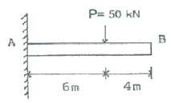
23. 무기가 100N의 강철 구가 그림과 같이 매끄러운 경사면과 유연한 케이블에 의해 매달려 있다. 케이블에 작용하는 응력은 몇 MPa인가?
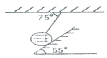
24. 폭 b=3cm, 높이 h=4cm의 직사각형 단면을 갖는 외팔보가 자유단에 그림에서와 같이 집중하중을 받을 때 보 속에 발생하는 최대전단응력은 몇 N/cm2인가? (문제 오류로 실제 시험에서는 모두 정답처리 되었습니다. 여기서는 1번을 누르면 정답 처리 됩니다.)
25. 지름 d인 강봉의 지름을 2배로 했을 때 비틀림 강도는 몇 배가 되는가?
26. 강재 중공축이 25kNㆍm의 토크를 전달한다. 중공축의 길이가 3m이고, 허용전단응력이 90MPa이며, 축의 비틀림각이 2.5°를 넘지 않아야 할 때, 축의 최소 외경과 내경을 구하면 각각 약 몇 mm인가? 9단, 전단탄성계수는 85GPa이다.)
27. 축방향 단면적 A인 임의의 재료를 인장하여 균일한 인장 응력이 작용하고 있다. 인장방향 변형률이 e, 포아송의 비를 v라 하면 단면적의 변화량은 약 얼마인가?
28. 선형 탄성 재질의 정사각형 단면봉에 500kN의 압축력이 작용할 때 80MPa의 압축응력이 생기도록 하려면 한변의 길이를 몇 cm로 해야 하는가?
29. 단면적이 4cm2인 강봉에 그림과 같이 하중이 작용할 때 이 봉은 약 몇 cm 늘어나는가? (단, 탄성계수 E=219GPa이다.)
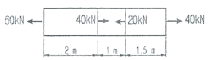
30. 그림과 같은 부정정보의 전 길이에 균일 분포하중이 작용할 때 전단력이 0이 되고 최대 굽힘모멘트가 작용하는 단면은 B단에서 얼마나 떨어져 있는가?
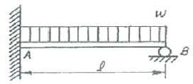
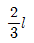
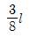
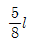
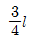
31. 그림과 같은 단면을 가진 A, B, C의 보가 있다. 이 보들이 동일한 굽힘모멘트를 받을 때 최대 굽힘응력의 비로 옳은 것은?
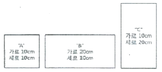
32. 보의 임의의 점에서 처짐을 평가할 수 있는 방법이 아닌 것은?
33. 그림과 같은 보가 분포하중과 집중하중을 받고 있다. 지점 B에서의 반력의 크기를 구하면 몇 kN인가?
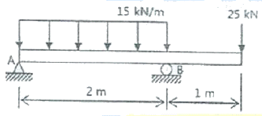
34. 강재 나사봉을 기온이 27℃일 때에 24MPa의 인장 응력을 발생시켜 놓고 양단을 고정하였다. 기온이 7℃로 되었을 때의 응력은 약 몇 MPa인가?
35. 그림과 같은 단면의 x - x축에 대한 단면 2차 모멘트는?
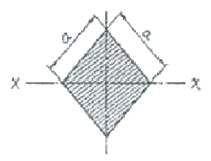
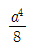
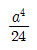
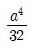
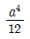
36. 그림과 같은 삼각형 단면을 갖는 단주에서 선 A-A를 따라 수직 압축 하중이 작용 할 때, 단면에 인장 응력이 발생하지 않도록 하는 하중 작용점의 범위(d)를 구하면? (단, 그림에서 같이 단위는 mm이다.)
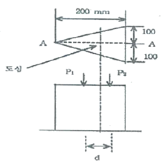
37. 평면응력 상태에서 σx=300MPa, σy=-900MPa, τxy=450MPa 일 때, 최대 주응력 σ1은 몇 MPa인가?
38. 그림과 같은 외팔보에서 고정부에서의 굽힘모멘트를 구하면 약 몇 kNㆍm인가?
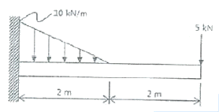
39. 아래와 같은 보에서 C점(A에서 4m떨어진 점) 에서의 굽힘모멘트 값은?
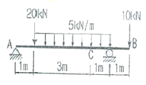
40. 그림과 같이 지름 50mm의 연강봉의 일단을 벽에 고정하고, 자유단에는 50cm 길이의 레버 끝에 600N의 하중을 작용시킬 때 연강봉에 발생하는 최대주응력과 최대전단응력은 몇 MPa인가?
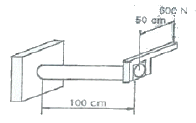
3과목: 용접야금
41. 강의 냉각 중 Fe-C 평행상태도에서 공석점의 조직변화 내용으로 옳은 것은?
42. 강괴의 응고에 관한 설명으로 틀린 것은?
43. 오스테나이트계 스테인리스강의 용접에 대한 설명으로 틀린 것은?
44. 방식법 중 부식을 방지하려는 금속을 외부전원에 연결하여 부식 전류와 반대방향의 전류를 흘려 부식을 방지하는 것은?
45. 금속결정구조가 면심입방격자(FCC)로만 되어 있는 것은?
46. 피복아크 용접봉의 심선재료로 저탄소 림드강이 사용되는 가장 큰 이유는?
47. 탄소강 중에서 인(P)이 미치는 영향으로 틀린 것은?
48. 금속의 강화기구 중 결정립의 크기와 강도와의 관계에 대한 설명으로 틀린 것은?
49. 일반적으로 저수소계 용접봉에서 탈산제로 사용되며, 용접 중 용융슬래그 내 FeO에 의하여 산화반응이 일어나는 원소는?
50. 소재에 인성을 부여하기 위한 열처리는?
51. 아크용접에서 기공발생에 가장 큰 원인이 되는 것은?
52. 18Cr-8Ni 스테인리스강의 조직으로 맞는 것은?
53. 구리의 일반적인 성질에 대한 설명 중 틀린 것은?
54. 황(S)의 영향으로 인하여 균열을 일으켜 가공을 곤란하게 하는 성질은?
55. 특수강의 원소 중 고온에서의 크리이프 강도, 내식성을 크게하며 열처리 효과를 크게 하고 뜨임 취성을 방지하는 원소는?
56. 용접 후 풀림 효과와 가장 거리가 먼 것은?
57. 전위가 인접한 슬림(Slip)면상에 이동하면서 생기는 계단상의 부분은?
58. 금속침투법에서 강재를 가열하여 그 표면에 Al을 확산 침투시키는 방법은?
59. 다음 중 압력 배관용 탄소 강판 재료를 나타내는 기호로 옳은 것은?
60. 주석청동 중에 납을 3.0 ~ 26% 첨가한 것으로 조직 중에 납이 거의 고용되지 않고, 입간에 점재하여 윤활성이 좋아 베어링, 부싱, 패킹 등에 사용되는 것은?
4과목: 용접구조설계
61. 홈 용접에 대한 설명 중 틀린 것은?
62. KS B 080에 금속재료 인장 시험편의 종류 중 4호 시험편의 표점거리는 몇 mm인가?
63. 이음개소가 1개소인 필릿 이음의 강도계산 공식으로 옳은 것은?
64. 필릿 용접부의 균열 방지대책이 아닌 것은?
65. 로크웰 경도에서 시험하중이 150kgf이며, 단단한 재료의 경도 측정에 사용되는 스케일(scale)로 적합한 것은?
66. 두께가 25mm이상의 연강판을 0℃이하에서 용접할 경우 예열 온도로 옳은 것은?
67. 평판 용접부를 검사하는 자기탐상검사에 대한 설명으로 틀린 것은?
68. 용접 중에 실시하는 작업 검사가 아닌 것은?
69. 용접성시험 중 노치 취성 시험에 해당하는 것은?
70. [그림]의 T형 측면 필릿 용접 이음에서의 응력을 구하는 식은?
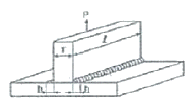
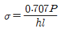
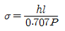
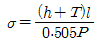
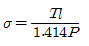
71. 구조용강의 용접균열을 발생장소, 발생방향, 발생온도에 따라 구분할 때 발생온도에 따라 구분에 해당되지 않는 것은?
72. 가스 실드 아크 용접 시 실드가스가 부족할 때 가장 많이 발생하는 용접 결함은?
73. 용착 금속의 기계적 성질에 대한 설명으로 틀린 것은?
74. 한국산업표준에서 용접의 기본기호 중 [보기]가 의미하는 것은?
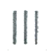
75. 주철제품의 보수용접 방법으로 틀린 것은?
76. 비드 밑 균열의 발생과 관계없는 것은?
77. 용접부의 크기를 결정하는 기본 설계방법으로 틀린 것은?
78. 세로비드 노치 굽힘 시험법으로 용접하지 않은 모재를 시험할 수 있는 장점이 있으며, 용접부의 연성이나 균열을 조사하는 시험은?
79. 구조물 제작 시 용접 이음형상에 따른 종류가 아닌 것은?
80. 접합하려는 두 부재를 겹쳐놓고 한쪽의 부재에 둥근 구멍을 뚫고 그 곳을 용접하는 것은?
5과목: 용접일반 및 안전관리
81. 용접조건이 같을 때 맞대기 이음의 첫층(1pass)에서 수축량에 미치는 영향이 가장 큰 강은?
82. 연납땜에 주로 사용하는 용가재인 주석의 특징을 설명한 것 중 틀린 것은?
83. MIG용접 시 용융금속의 이행 행태가 아닌 것은?
84. 이산화탄소 아크용접 시 건강에 가장 나쁜 영향을 미치는 것은?
85. 용접에 의한 블로 홀(blow hole)발생 방지대책이 아닌 것은?
86. 방사선 투과사진의 상의 질을 나타내는 척도는?
87. 플라스마 아크 용접에 적당항 재료가 아닌 것은?
88. 외부에서 신선한 공기를 송급시키는 호흡용 보호구는?
89. 내용적 50L의 산소용기에 설치한 조정기의 고압게이지가 8MPa에서 산소를 사용한 후 1MPa로 떨어졌다면 산소의 소비량은?
90. 용접부의 예열 목적에 대하여 설명한 것 중 틀린 것은?
91. 마찰용접의 특징에 대한 설명으로 틀린 것은?
92. 투과법, 펄스 반사법, 공진법 등으로 시험하는 비파괴검사는?
93. 콘크리트 절단을 할 수 있는 것은?
94. 간이 자동화 용접법인 중력식 용접법(gravity welding)에 주로 사용되는 피복 아크 용접봉의 종류로 가장 적당한 것은?
95. 안전표지 색채에서 지시표지에 사용되는 색은?
96. 피복 아크 용접에서 V형 용접 홈을 선택할 경우 판두께로 적합한 것은?
97. 허용 사용률이 몇 % 이상이면 용접기를 연속적으로 사용해도 지장이 없는가?
98. 진공상태에서 용접하는 것은?
99. 아세틸렌 용기의 밸브는 일반적으로 전용핸들을 이용하여 몇 회전 정도 열어서 사용하면 좋은가?
100. 탄산가스 용접에 관련항 설명으로 틀린 것은?